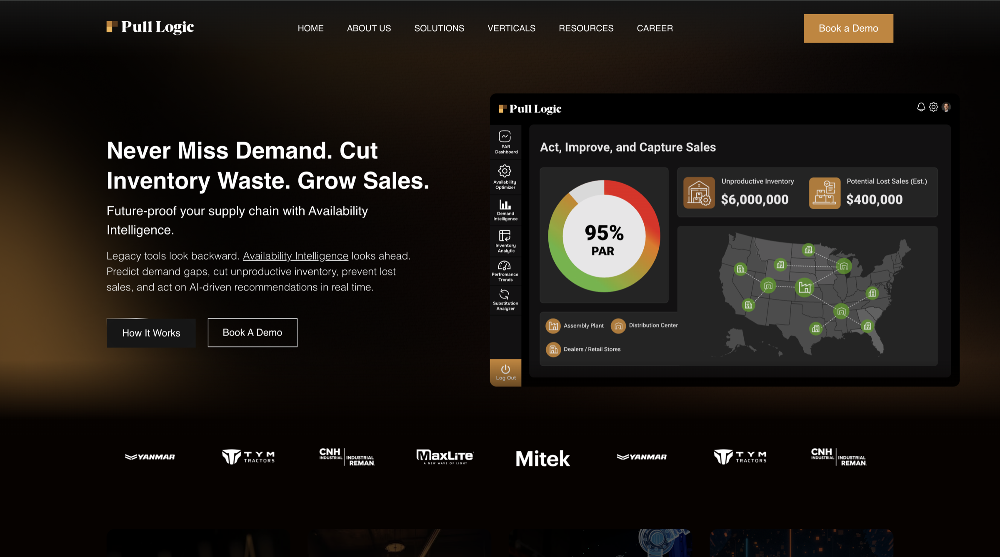
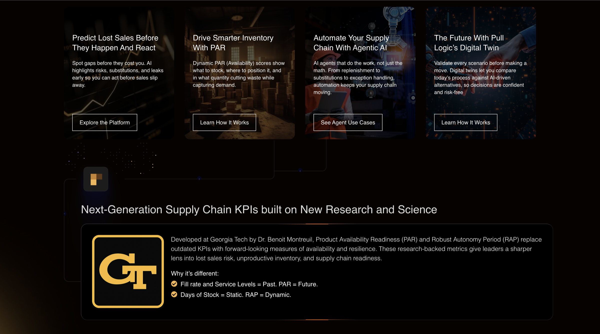
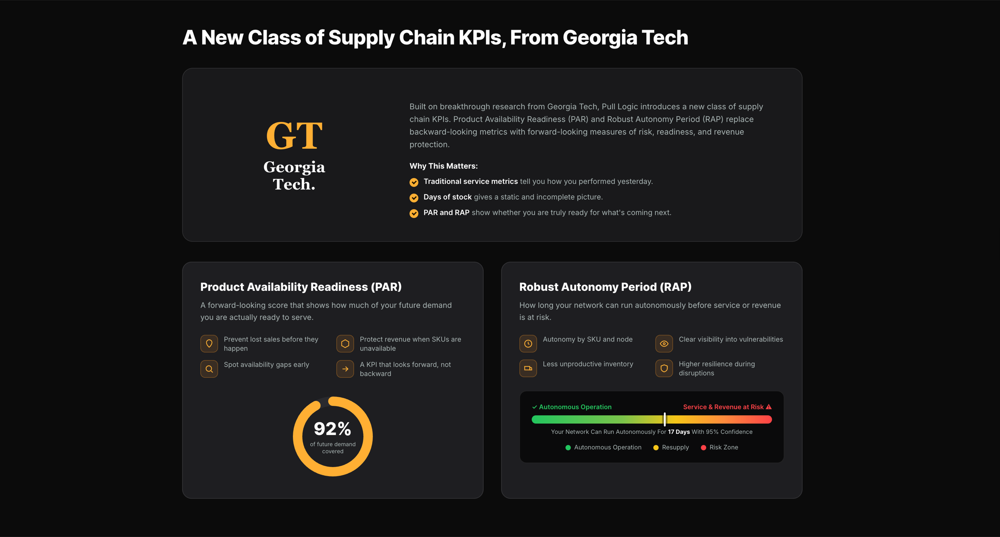
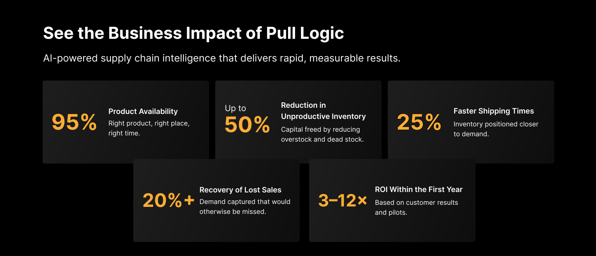
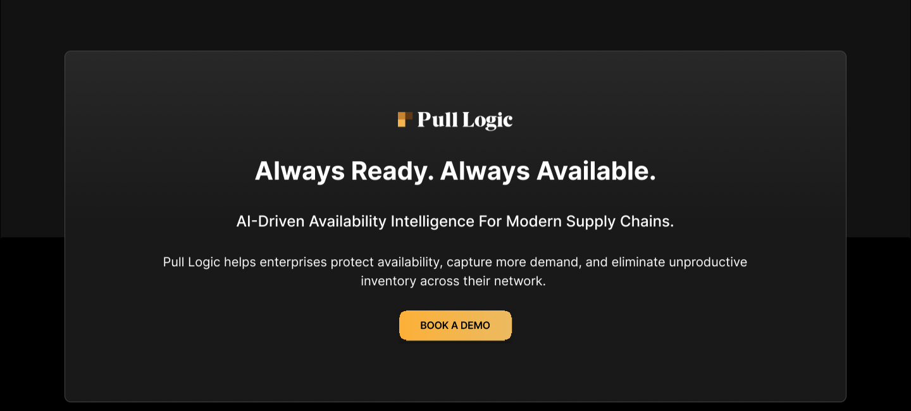
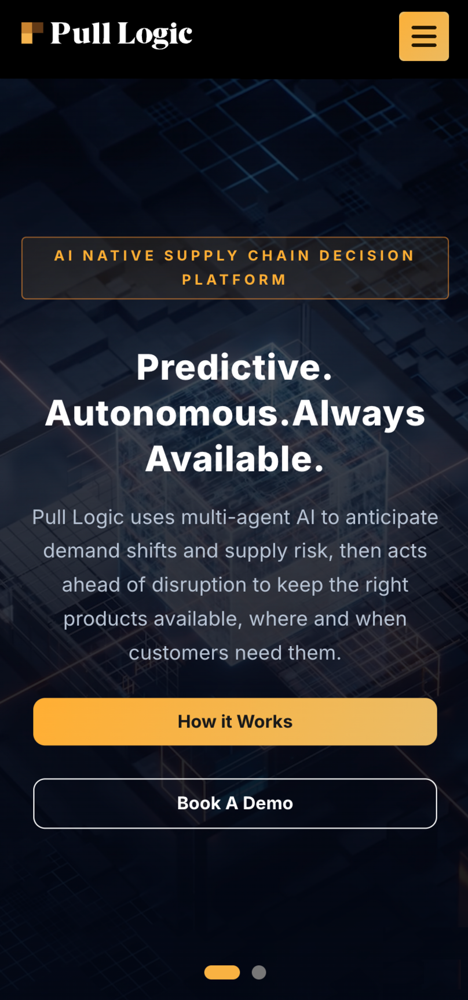

Pull Logic turns dense enterprise AI, demand prediction, agentic execution, digital twins, into a clear, trustworthy, conversion-focused marketing site.
A complex, multi-agent AI platform, reframed as a clear, credible, conversion-focused marketing site.
Brand and site were rebuilt as one system: a confident dark identity, a single conversion accent, and a component library that scales across 16 pages.
Every decision served one goal, make the platform clear, the vendor credible, and the path to a demo obvious.
Pull Logic delivers advanced AI-powered availability optimization. The challenge was translating a dense enterprise platform, PAR/RAP metrics, agentic execution, digital twins, into a website that feels clear, trustworthy, and built to convert.
Make an abstract AI platform instantly understandable to non-technical buyers.
Signal credibility with research, proof, and a refined, enterprise-grade aesthetic.
Structure the journey so every section drives toward a single conversion action.
Build reusable tokens and components that extend cleanly across the full site.
The redesign moved Pull Logic from a traditional software look to a premium, enterprise-AI presence, with clearer hierarchy, a stronger brand, and a journey built to convert.

A split hero buried the promise beside a busy dashboard, so the value proposition was slow to read.
Centered a three-word promise on a calm canvas with one primary call-to-action.
Platform value now lands in a single glance, above the fold.
Flat top-level links gave every destination equal weight and hid the conversion path.
Reordered links around buyer intent and isolated a single persistent gold CTA.
A clearer hierarchy, with the demo action always one click away.

Photographic cards competed for attention and made capabilities hard to compare.
Moved to a quiet, modular card system with consistent structure and reserved accent use.
Capabilities became scannable, and the pattern now scales across the site.
The dark visual theme reinforces Pull Logic's AI-driven enterprise positioning, while deep-gold accents create strong visual contrast and highlight every conversion-focused action.
A dark canvas reads as technical, premium, and AI-native, the register enterprise infrastructure buyers expect, and the ideal backdrop for data-dense product UI.
One warm accent against neutral charcoal creates unmistakable focus. Reserved for CTAs and key metrics, it directs the eye without the noise of a multi-color palette.
Restraint, fine hairlines, and generous space signal maturity and scale, the visual language of serious infrastructure software, not a startup landing page.
A calm, confident interface de-risks an unfamiliar vendor and keeps the path to a demo obvious, turning credibility into measurable action.
A modular "P" symbol paired with a refined wordmark, primary on light and reversed on dark.
Charcoal and black anchor the system; Deep Gold drives emphasis; emerald and navy support depth.
Inter across the system, bold for impact with structured weights for clear hierarchy.
Calm, technical, confident.
Generous negative space, fine hairlines, and data-forward components let dense technical content breathe. Gold appears sparingly, reserved for emphasis and conversion, so the interface stays calm while signalling exactly where to act.
Each principle was defined up front and used as a lens for every layout, component, and content decision across the site.
Simplify complex, AI-driven supply-chain concepts into understandable user experiences.
Build credibility through data-driven storytelling, research-backed insights, and enterprise-grade visual design.
Create a flexible visual and component system capable of supporting future platform growth.
Guide users toward meaningful actions while maintaining an educational, consultative experience.
Tokens, components, and a strict grid built to scale, so the same building blocks compose every page of the site.
Sticky top navigation with a persistent gold CTA, so the conversion action is always one click away.
An 8px spatial grid with a 4px sub-step governs every offset in the system.
Numerals set in tabular figures so columns of metrics align.
The homepage was architected around five decision stages, so every section earns the next moment of attention and moves enterprise buyers steadily toward conversion.
The homepage was intentionally structured around the decision-making journey of enterprise buyers, progressively building trust, understanding, and confidence before presenting conversion opportunities.
Each block is examined through its goal and the design decision that delivered it, showing how the page was built to convert.
Communicate the value proposition immediately.
Led with a three-word promise and a single focused call-to-action over a calm dark canvas, removing jargon so value lands at first glance.
Help users quickly understand Pull Logic capabilities.
Used a modular, card-based architecture to improve scanability and support future platform expansion.

Establish authority and credibility.
Highlighted Georgia Tech research to differentiate Pull Logic from competitors and de-risk an unfamiliar vendor.
Demonstrate measurable, tangible value.
Used a data-focused KPI presentation to communicate business benefits clearly, with gold reserved for the numbers that matter.


Drive demo bookings.
Isolated a single gold CTA and removed every competing path, so the only obvious next action is to book a demo.
How the Pull Logic experience adapts across screen sizes while holding clarity, usability, and the conversion path intact.
Enterprise users reach Pull Logic across desktops, tablets, and phones, often mid-workflow. The experience has to feel like one product on every screen.
Keep the system consistent while adapting navigation, layout, and content hierarchy to each context, so nothing essential is lost on the way down to mobile.

The full horizontal bar collapses to a single menu trigger with larger tap targets, so smaller screens stay uncluttered and easy to navigate one-handed.
Multi-column sections reorder into one column with the most important message surfaced first, so core value lands before any supporting detail.
Cards, grids, and buttons adapt fluidly, multi-up rows become full-width stacks on the same 12-column system, so nothing breaks between breakpoints.
The demo CTA stays visible and thumb-reachable through every breakpoint, keeping the primary action one tap away on mobile.
The redesign was measured by clarity, positioning, scalability, and a conversion-focused experience.
Simplified communication of complex platform capabilities.
Created a stronger and more modern market presence.
Established reusable components and visual standards.
Designed a user flow that supports awareness, trust-building, and demo generation.
This project focused on transforming a complex AI-powered supply chain platform into a clear, trustworthy, and conversion-focused digital experience.
By combining strategic information architecture, a scalable design system, and a stronger visual identity, the redesign established a foundation for future growth and enterprise credibility.
Designed for Clarity.
Built for Trust.
Optimized for Growth.